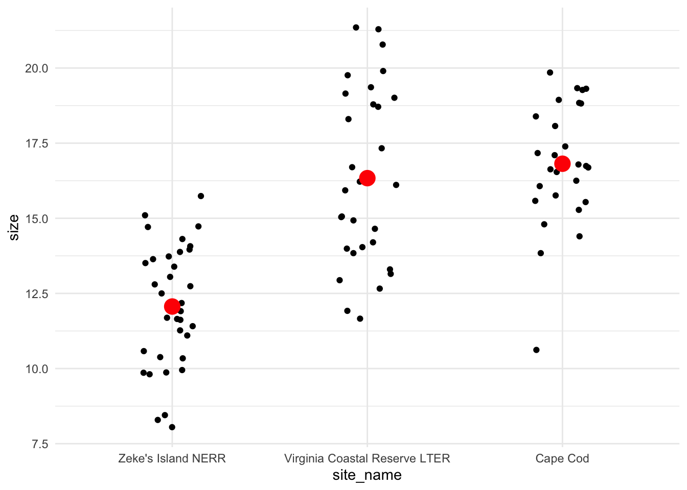
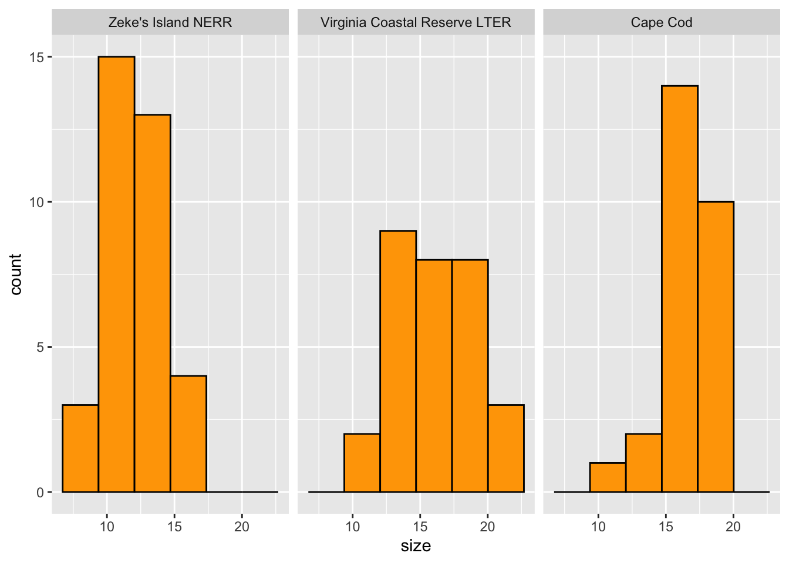
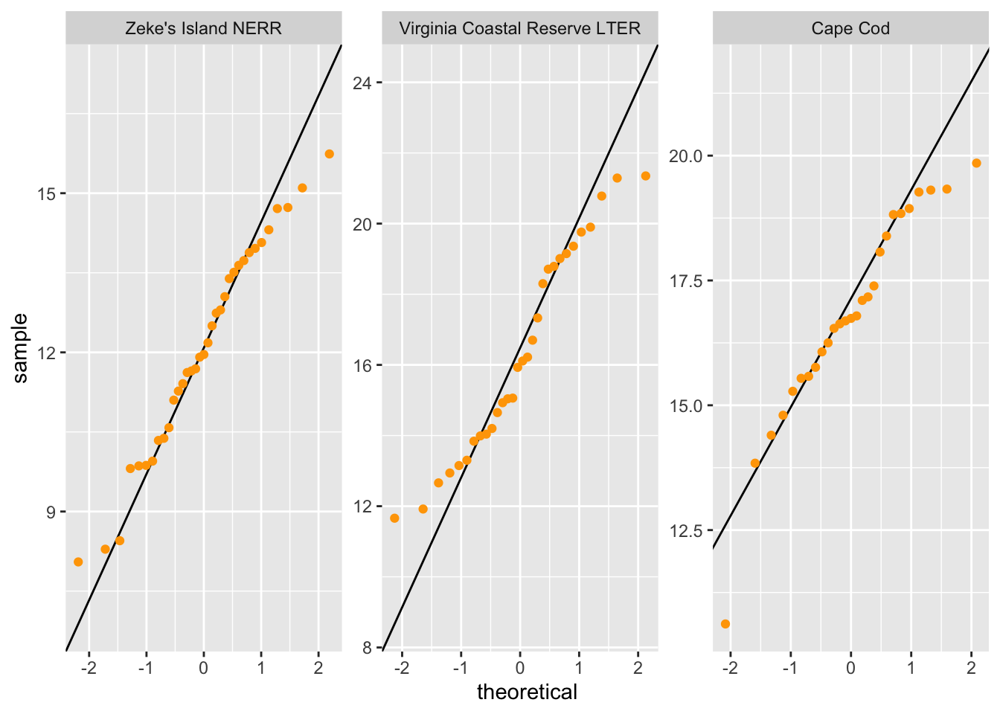

library(tidyverse)
library(lterdatasampler)
library(rstatix)
library(car)
# for parametric tests
data(pie_crab)Workshop date: Friday 6 February
1. Summary
Packages
tidyverse
lterdatasampler
rstatix
Operations
New functions
- make sure a variable is a factor using
as_factor() - do an ANOVA using
aov()
- look for more information from model results using
summary()
- do post-hoc Tukey test using
TukeyHSD()
- calculate effect size for ANOVA using
rstatix::eta_squared()
Review
- read in data using
read_csv()
- chain functions together using
|>
- modify columns using
mutate()
- select columns using
select()
- rename columns using
rename()
- visualize data using
ggplot()
- create histograms using
geom_histogram()
- visualize QQ plots using
geom_qq()andgeom_qq_line()
- create multi-panel plots using
facet_wrap()
- group data using
group_by()
- summarize data using
summarize()
Data sources
The Plum Island Ecosystem fiddler crab data is from lterdatasampler (data info here). Crab carapace width is measured in mm.
2. Code
1. Packages
2. Parametric tests
a. Cleaning and wrangling
- Create a new object called
pie_crab_clean. - Filter to only include the following sites: Cape Cod, Virginia Coastal Reserve LTER, and Zeke’s Island NERR.
- Make sure
siteis a factor. - Select the columns of interest:
site,name, andcode. - Rename the column
nametosite_nameandcodetosite_code.
pie_crab_clean <- pie_crab |> # start with the pie_crab dataset
filter(site %in% c("CC", "ZI", "VCR")) |> # filter for Cape Cod, Zeke's Island, Virginia Coastal
mutate(name = as_factor(name)) |> # make sure site name is being read in as a factor
select(site, name, size) |> # select columns of interest
rename(site_code = site, # rename site to be site_code
site_name = name) # rename name to be site_name
# display some rows from the data frame
# useful for showing a small part of the data frame
slice_sample(pie_crab_clean, # data frame
n = 10) # number of rows to show# A tibble: 10 × 3
site_code site_name size
<chr> <fct> <dbl>
1 VCR Virginia Coastal Reserve LTER 18.8
2 ZI Zeke's Island NERR 9.95
3 ZI Zeke's Island NERR 12.0
4 ZI Zeke's Island NERR 10.6
5 VCR Virginia Coastal Reserve LTER 21.3
6 CC Cape Cod 18.8
7 ZI Zeke's Island NERR 9.81
8 VCR Virginia Coastal Reserve LTER 21.4
9 ZI Zeke's Island NERR 14.1
10 ZI Zeke's Island NERR 10.4 b. Quick summary
- Create a new object called
pie_crab_summary. - Calculate the mean, variance, and sample size. Display the object.
# creating a new object called pie_crab_summary
pie_crab_summary <- pie_crab_clean |> # starting with clean data frame
group_by(site_name) |> # group by site
summarize(mean = mean(size), # calculate mean size
var = var(size), # calculate variance of size
n = length(size)) |> # calculate number of observations per site (sample size)
ungroup() # ungrouping
# display pie_crab_summary
pie_crab_summary# A tibble: 3 × 4
site_name mean var n
<fct> <dbl> <dbl> <int>
1 Zeke's Island NERR 12.1 4.04 35
2 Virginia Coastal Reserve LTER 16.3 8.63 30
3 Cape Cod 16.8 4.22 27c. Exploring the data
Create a jitter plot with the mean crab carapace width for each site.
# base layer: ggplot
ggplot(pie_crab_clean, # use the clean data set
aes(x = site_name, # x-axis
y = size)) + # y-axis
# first layer: jitter (each point is an individual crab)
geom_jitter(height = 0, # don't jitter points vertically
width = 0.15) + # narrower jitter (easier to see)
# second layer: point representing mean
stat_summary(geom = "point", # geometry being plotted
fun = mean, # function (calculating the mean)
color = "red", # color to make it easier to see
size = 5) + # larger point size
theme_minimal() # cleaner plot theme
Is there a difference in mean crab carapace width between the three sites?
Yes, and Zeke’s Island NERR crabs tend to be smaller than those from Cape Cod or Virginia Coastal Reserve LTER.
d. Check 1: normally distributed variable
- Create a histogram of crab size.
- Facet your histogram so that you have 3 panels, with one panel for each site.
# base layer: ggplot
ggplot(data = pie_crab_clean,
aes(x = size)) + # x-axis
# first layer: histogram
geom_histogram(bins = 6, # bins from Rice Rule (approximate)
fill = "orange",
color = "black") +
# faceting by site_name: creating 3 different panels
facet_wrap(~ site_name) 
- Create a QQ plot of crab size.
- Facet your QQ plot so that you have 3 panels, with one panel for each site.
# base layer: ggplot
ggplot(data = pie_crab_clean,
aes(sample = size)) + # y-axis
# first layer: QQ plot reference line
geom_qq_line() +
# second layer: QQ plot points (actual observations)
geom_qq(color = "orange") +
# faceting by site_name
facet_wrap(~ site_name,
scales = "free") # let axes vary between panels
What are the outcomes of your visual checks?
Not perfect (crab carapace width from VCR LTER seems not normally distributed) but with large sample sizes for each group, this might not matter too much.
e. Check 2: equal variances
Do a gut check: is the ratio of the largest variance to the smallest variance less than 3?
8.63/4.04[1] 2.136139What are the outcomes of your variance check?
By the rule of thumb (ratio of largest variance to smallest variance < 3), the variances are close enough; the largest variance is about 2.1 times larger than the smallest variance.
f. ANOVA
# creating an object called crab_anova
crab_anova <- aov(size ~ site_name, # formula
data = pie_crab_clean) # data
# test object
crab_anovaCall:
aov(formula = size ~ site_name, data = pie_crab_clean)
Terms:
site_name Residuals
Sum of Squares 442.2073 497.4372
Deg. of Freedom 2 89
Residual standard error: 2.364145
Estimated effects may be unbalanced# gives more information
summary(crab_anova) Df Sum Sq Mean Sq F value Pr(>F)
site_name 2 442.2 221.10 39.56 5.1e-13 ***
Residuals 89 497.4 5.59
---
Signif. codes: 0 '***' 0.001 '**' 0.01 '*' 0.05 '.' 0.1 ' ' 1Summarize results: is there a difference in mean crab carapace width between the three sites?
There is a difference in mean crab carapace width between Cape Cod, Virginia Coastal Reserve LTER, and Zeke’s Island NERR (one-way ANOVA, F(2, 89) = 39.6, p < 0.001, \(\alpha\) = 0.05).
g. Post-hoc: Tukey HSD
TukeyHSD(crab_anova) Tukey multiple comparisons of means
95% family-wise confidence level
Fit: aov(formula = size ~ site_name, data = pie_crab_clean)
$site_name
diff lwr upr
Virginia Coastal Reserve LTER-Zeke's Island NERR 4.2719524 2.869912 5.673993
Cape Cod-Zeke's Island NERR 4.7514709 3.308099 6.194843
Cape Cod-Virginia Coastal Reserve LTER 0.4795185 -1.015317 1.974354
p adj
Virginia Coastal Reserve LTER-Zeke's Island NERR 0.0000000
Cape Cod-Zeke's Island NERR 0.0000000
Cape Cod-Virginia Coastal Reserve LTER 0.7255994Which pairwise comparisons are actually different? Which ones are not different?
Zeke’s Island NERR and Cape Cod crabs are different, and Zeke’s Island NERR and Virginia Coastal Reserve LTER crabs are different. Virginial Coastal Reserve LTER and Cape Cod crabs are not different.
h. effect size
Using eta_squared() from rstatix
eta_squared(crab_anova)site_name
0.4706113 What is the magnitude of the differences between sites in crab size?
There is a large difference in crab size between sites.
i. Putting everything together
We found a large (\(\eta^2\) = 0.47) difference between sites in mean crab carapace width (one-way ANOVA, F(2, 89) = 39.6, p < 0.001, \(\alpha\) = 0.05). The smallest crabs were from Zeke’s Island NERR, which were on average 12.1 mm. Zeke’s Island crabs were 4.8 mm (95% CI: [3.3, 6.2] mm) smaller than crabs from Cape Cod (Tukey’s HSD: p < 0.001) and 4.3 mm (95% CI: [2.9, 5.7] mm) smaller than crabs from Virginia Coastal Reserve LTER (Tukey’s HSD: p < 0.001).
3. Figures and captions
See your workshop materials for a PDF on how to write captions to accompany figures.